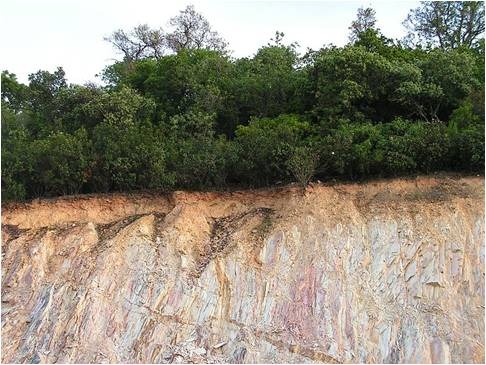
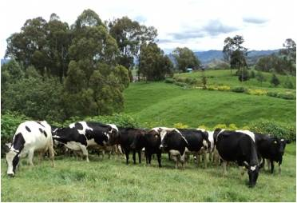
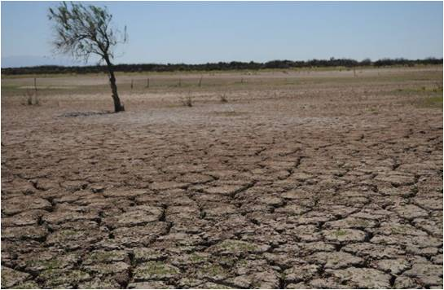
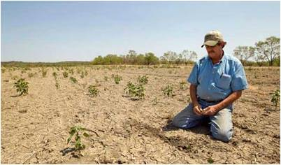
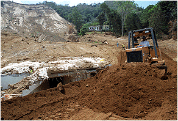

Introducción
El suelo es un componente de los ecosistemas terrestres y un recurso natural que se ubica en la capa superior de la corteza terrestre. Usualmente pensamos como un elemento carente de vida, pero dentro de él habitan las raíces de las plantas, algas, líquenes, microorganismos (bacterias, hongos y actinomicetos), una gran variedad de invertebrados (lombrices, ciempiés, milípedos, moluscos, etc) e incluso algunos vertebrados construyen madrigueras dentro de él (topos, ratones, conejos, rabipelados, etc).
El suelo contiene agua y elementos nutritivos que los seres vivos que lo utilizan y tiene un importante papel para el hombre, ya que de él depende la producción de alimentos, la crianza de animales, la plantación de árboles, la obtención de agua y de algunos recursos minerales, entre otras cosas. En él se apoyan y nutren las plantas en su crecimiento e influye en algunos procesos importantes que ocurren en los ecosistemas, como el ciclo hidrológico y de nutrientes, así como la producción y descomposición de la materia orgánica.
El explosivo crecimiento demográfico ha llevado a una intensificación de las actividades productivas, entre ellas la agricultura, la expansión zonas urbanas e industriales, la extracción de minerales y la disposición de grandes cantidades de desechos de variada naturaleza, que han generado la degradación del suelo. La degradación del suelo consiste en el deterioro de su calidad, y consecuentemente, de su aptitud productiva.
La degradación del suelo se manifiesta de varias formas, el agua y el aire ya no circulan con facilidad dentro de él, la superficie del suelo se endurece y hasta puede tornarse impermeable, con lo cual el agua de las lluvias, en lugar de almacenarse en su interior, se pierde por escurrimiento superficial y se hacen frecuentes los encharcamientos y anegamientos cada vez que llueve. Los rendimientos de los cultivos declinan y la explotación se hace cada vez menos rentable y desaparece la vegetación natural que los cubre. Con la pérdida de la cobertura vegetal, se expone el suelo a la radiación solar directa, lo cual provoca su calentamiento excesivo y facilitan la muerte de muchos de sus pequeños habitantes, la biodegradación del humus, con lo cual desaparecen los agregados, y con ellos la trama porosa que éstos habían generado.
Actualmente, la degradación de los suelos es un problema se encuentra cada vez más en el punto de mira de la gestión ambiental, debido principalmente al riesgo que un suelo degradado puede suponer para la salud humana y para el correcto funcionamiento de los ecosistemas. Pero a pesar de los problemas que puede ocasionar esta degradación, el hombre sigue abusando del suelo; utilizándolo de manera continua e indiscriminada en muchas ocasiones, dando lugar a que las propiedades naturales del suelo se vean negativamente afectadas.
